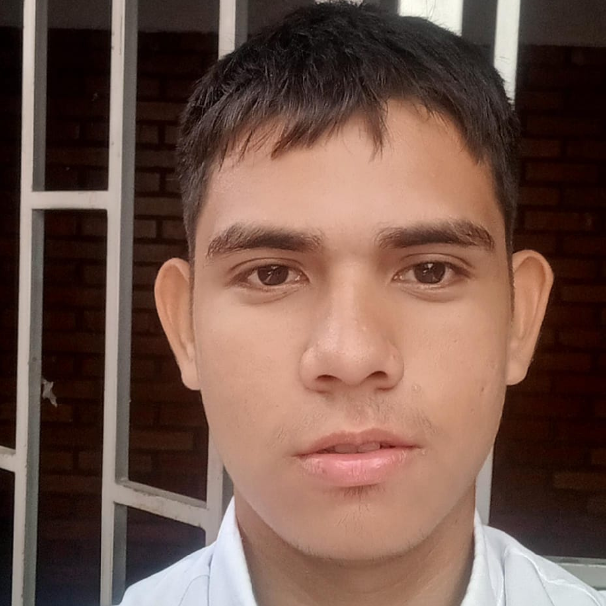

Diseñador

Ruben Valencia
Perfil personal
Un apasionado del desarrollo de software, con 18 años, actualmente cursando un tecnólogo en Desarrollo de Software en el SENA. Mi formación me ha permitido adquirir conocimientos clave en programación, bases de datos y metodologías ágiles, lo que me permite abordar proyectos desde la fase de conceptualización hasta la implementación.
Responsabilidad
Como diseñador de software, mi responsabilidad es desarrollar soluciones innovadoras, eficientes y funcionales, asegurando que cada proyecto cumpla con los estándares de calidad y las expectativas del cliente, manteniendo una constante actualización en las tendencias tecnológicas.
Perfil Profesional
Mi perfil profesional se basa en el dominio de lenguajes de programación, el manejo de bases de datos y la implementación de metodologías ágiles para optimizar procesos de desarrollo. He trabajado en proyectos que involucran la creación de software y plataformas digitales.
Habilidades y Competencias
Poseo habilidades en resolución de problemas, pensamiento lógico y creativo, trabajo en equipo, y soy capaz de gestionar proyectos de desarrollo con enfoque en eficiencia y escalabilidad. Mi capacidad para adaptarme rápidamente a nuevas tecnologías es una de mis principales fortalezas.